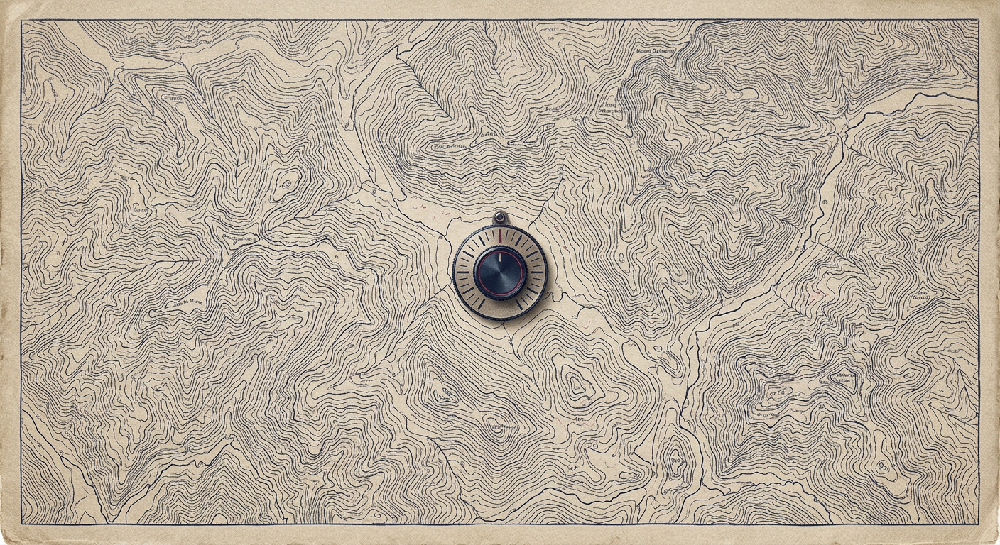

A re-analysis of 15 seasons of Europe's big-five leagues finds that one Lionel Messi outweighs more than two of the best managers — and Carlo Ancelotti ranks among the worst 10 of 596 currently-employed coaches.
Cristiano Ronaldo and Lionel Messi each rate +9.24 points per season above an average peer in their position. The best-projected manager in football — Lucien Favre, then at Borussia Dortmund — rates +3.76. One Messi, the model says, is worth roughly two and a half Lucien Favres.
That ratio reframes a thing fans love to argue about. Football culture treats managers as decisive figures: pundits credit promoted teams' survival to a "manager bounce", clubs sack coaches mid-season hoping for an instant lift. Yet across 596 currently employed top-flight managers, the gap between the best and worst projected impact is only 6.56 points per season — a span any single elite player exceeds on his own.
To separate manager effects from squad quality, The Economist used FIFA's video-game ratings, scored 0–99 each season by EA's analysts and a network of about 9,000 dedicated scouts. Those ratings were available before each season started, which is the trick: they measure player skill independent of that year's results.
Player ratings were z-scored within position groups and exponentiated, then summed for each squad's first-choice goalkeeper, top five defenders, and top seven attackers. The resulting forecasts come out within 7.27 points (mean absolute error) of actual league points, across 1,470 team-seasons. Three quarters of team-seasons land within 10 points; almost half land within 5. That accuracy — better than betting markets in some seasons — is what makes the rest of this analysis honest.
Across 1,470 team-seasons in five leagues, the gap between the strongest squad's expected points (96.3) and the weakest (15.5) is 80.8 points. Across 596 currently-employed managers, the gap between best and worst projected impact is 6.56 points. Squad differences are roughly twelve times larger than manager differences.
Put another way, the league table is overwhelmingly written by the cheque book. The manager fine-tunes within an envelope someone else has already drawn.
Apply the projection to football's household names and the order is humbling. Maurizio Sarri (+3.04) edges Jürgen Klopp (+2.85), and both sit above Pep Guardiola (+1.85) and José Mourinho (+0.84). Sir Alex Ferguson, projected from a partial Premier League record, lands at +2.02. Arsène Wenger comes out at -0.35; Zinedine Zidane at -0.63; Marcelo Bielsa at -1.01.
The single most striking name in the bottom ten is Carlo Ancelotti, then at Napoli, at -2.80 — second-worst of all 596 currently employed coaches. Ancelotti has won league titles in four countries and the Champions League three times. The model says the league points he produced track what his squads were already projected to produce, and at recent stops he has been below the line.
None of this means Ancelotti is a bad coach or that Pep is overrated. It means the gap between revered and merely competent is a fraction of what fans assume. Most of the prestige is built on running excellent squads.
Bottom 10 — second-worst, at -2.80 points per season. Ancelotti is one of the most decorated managers in modern football. The model says his recent league output trails what his squads were projected to deliver.
Here is where the household names actually rank. Coral bars are below the league-average line.
Among 222 managers with at least two tenures of 15+ league games, only 45% of those who beat expectations in their first job did so again in the next one. The Economist's article reports 51%; the published data here gives 45%. Either way the message is the same: past overperformance is barely better than a coin flip.
To respect that uncertainty, the model adds 461 games of league-average performance to every manager's record before projecting his future. A coach with one season's worth of data carries 7.6% of his record forward; with five seasons, 29.2%; only after a full decade does he carry close to half. The Premier League sacks managers faster than this curve catches up.
games / (games + 461).The dataset's biggest single-season surprise is Leicester's 2015–16 Premier League title: a squad projected to take 40.2 points won 81. RB Leipzig's first Bundesliga season (2016–17) ran 31.3 points hot. Montpellier won Ligue 1 in 2011–12 with 31.2 points more than expected. These are exactly the seasons football culture remembers as managerial fairy tales.
On the other side: Mourinho's defending-champion Chelsea collapsed by 31.4 points in 2015–16, sacking him in December. 2010 Juventus and 2013 Inter both undershot by more than 23. When pundits demand a manager's head after a bad run, this is the data they are pointing at.
But the model attributes most of these gaps to noise — random variance that does not repeat. Of the 1,220 manager-team tenures in the big-five leagues since 2004, two-thirds end before reaching one full season. We fire managers on samples too small to mean anything, then attribute the next bounce — usually regression to the mean — to the new face on the touchline.
Even within the small space managers occupy, where you spend matters. The top attackers in this data add nine points a season; the top goalkeepers add a fifth of one. The 95th-percentile attacker (+3.85) is alone worth more than the best projected manager. Buying the right striker is, on this evidence, a far bigger lever than hiring the right boss.
So why do clubs spend so much energy on the touchline? Because firing a manager is a thing you can do this week. Squad quality is a multi-year project; coaches are the visible decision. The Economist's analysis doesn't say managers are useless — Favre, Simeone, Klopp clearly squeeze more out of their squads than peers — only that the dial they turn is small, and that most decisions made in their name are reading luck as skill.
If you want to know who will win next season, look at the wage bill. If you want to know who got fired, follow the variance.
